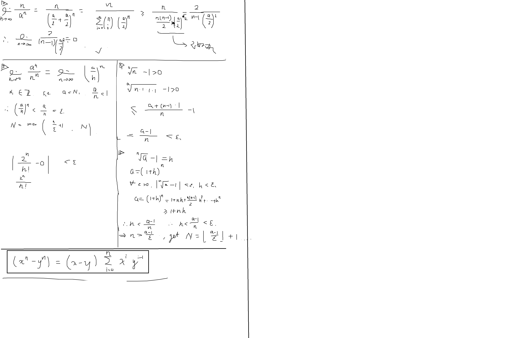

Prove that \(\lim_{n\to \infty} n/a^n=0\) .
Sol. Split \(a^n\) into \((1+h)\) . Trivial.
Prove that \(\lim_{n \to \infty } a^n/n^n=0(a>0)\) .
Sol. Get an abstract \(N_1\in \mathbb{Z}\) , s.t. \(a/n<1\) . We may get
$$ N = \max\{{n\over eps}+1, N_1\}. $$
Prove that \(\lim_{n\to \infty } 2^n/n!=0\) .
Sol. Amplify to \(2^n/n2^{n-2}\) . Trivial.
Prove that \(\lim_{n\to \infty}a^{1/n}=1\) , \(a>1\) .
Sol1. Solve directly. Trivial. (Method 1).
Sol2.(4)
Sol3.(5) \(>1\) we may get it better.
Prove that \(\lim_{n \to \infty} \sqrt[n]n =1\) .
